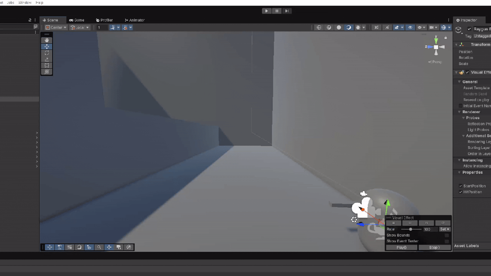
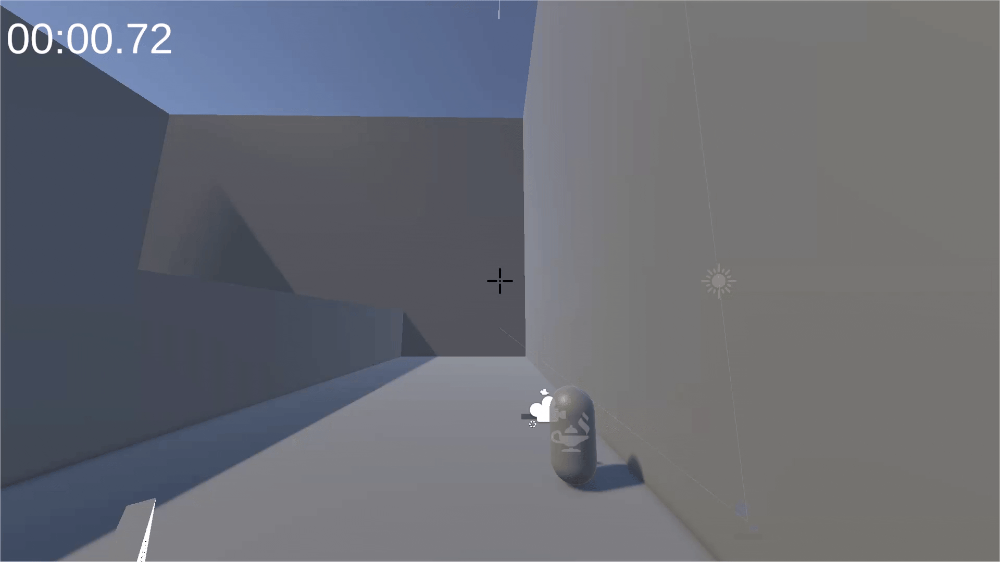
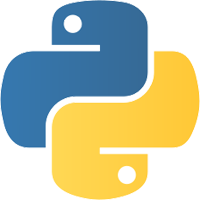
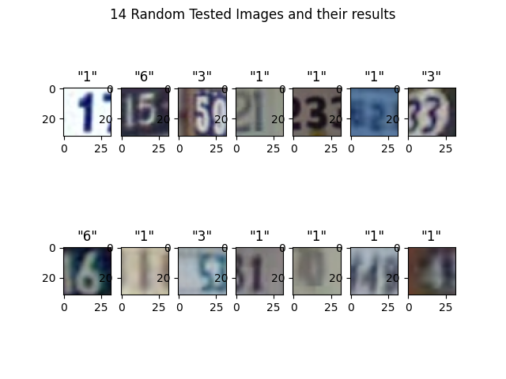
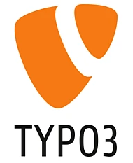

Beta 2026 - Maloomify the Ocean
Maloomify the Ocean is das Ergebnis eines Modulprojektes, in dem alle eingeschriebenen Studenten 2 Semester lang an einem Spiel arbeiten.Insgesamt haben an Maloomify the Ocean 60 Studenten gearbeitet. Es sollte simulieren wie es ist, in einem etwas größerem Spielestudio zu arbeiten. Dementsprechend ist das Resultat etwas unbalanciert, jedoch war die Intention eher die Erfahrung, und weniger das Ergebnis.
Ich habe als Programmierer im Backend gearbeitet, und habe spezifisch Features gecodet (z.B. einige der MicroGames). Entfernter habe ich in der Engine selbst noch einige Arbeiten erledigt, jedoch war das nicht mein Fokus.
Maloomify the Ocean ist auf Steam spielbar!
Game Programming - Pitch
"Pitch" ist ein Early Test Build für ein Spiel, das für das Modul "Game Programming" von mir erstellt wurde.Die Bearbeitungszeit betrug einen Monat, wobei bei mir der größte Teil für 2-3 andere Ideen genutzt wurde. Am Ende habe ich den ganzen Build in nur 10 Tagen erstellt.
Ein Teil der Aufgabe war es, ein Game Design Dokument zu erstellen und mehrere technisch komplexe Features zu implementieren, welche in meinem Fall waren:
- Vertikale Rotation des Charakters in der Luft, wonach er bei der Landung wieder aufrecht steht
- Ein Raygun Shot VFX, welcher mithilfe von VFXGraph implementiert wurde
- Ein funktionierendes Online Leaderboard, welches mit Unity Leaderboards umgesetzt wurde, wo die schnellste Zeit eingetragen werden kann
- Ein Level Select mit 2 Level
- Auf dem Boden eine Bewegung mit dem Unity Character Controller Component, und NavMesh-Bewegung für die Gegner (Level 2)




GPU-Programmierung - Machine Learning Projekt Im Modul GPU-Programmierung wurde uns aufgetragen, ein Projekt mit hardwarenaher Implementierung zu gestalten. Ich habe mich für ein Machine Learning Projekt mit PyTorch entschieden.Das Ergebnis ist ein reproduzierbares Machine Learning Modell, welches in einem Datensatz mit handgeschriebenen Nummern von 1-10 nach der Auswahl von 10 zufälligen Datenpunkten
die Zahlen 1, 3 und 6 mit jeweils etwa 20-30% Genauigkeit voraussagen kann.
Auch wenn das Modell nicht besonders gut oder datentechnisch gut ausgearbeitet ist, finde ich dass mir das Endergebnis persönlich viel gebracht hat.

Algorithmen und Datenstrukturen Projekt - AlgoSearch
AlgoSearch ist das Ergebnis eines uns aufgetragenen Projektes, die Zeichensuche in Texten zu gamifizieren.Spezifisch wurden die Algorithmen Boyer-Moore (Good und Bad), Knuth-Morris-Pratt, Suffix Tree und der naive Algorithmus behandelt.
Das Zeitbudget waren etwa 75 Stunden pro Person für eine Gruppe von 6 Personen.
VR/AR - VRLibrary
VRLibrary war ein freiwilliges Projekt im Modul "Virtual & Augmented Reality" (VR/AR). Es beinhält einen kleinen Bereich mit einem interagierbaren Schachbrett. In der näheren Umgebung befinden sich auch einige bewegbare Bücher und Lampen und außerhalb des Bereichs befindet sich auch eine einfache Landschaft. VRLibrary nutzt zudem die Virtual Reality Technologie in Unity.
Wissenschaft und Wirtschaft 4 (WW4) - Games Studieren Website Im Modul WW4 haben wir als Team von 8 Personen die Aufgabe bekommen, die Games Studieren Website der Hochschule Mittweida neu zu gestalten.Ich habe dabei den Backend-Server aufgesetzt und zusätzlich die Designs mit Svelte und Typo3 umgesetzt.
Insgesamt hat jede Person jeweils 250 Stunden daran gearbeitet.
Auch wenn es funktional war, wurde das Endergebnis nicht eingesetzt.